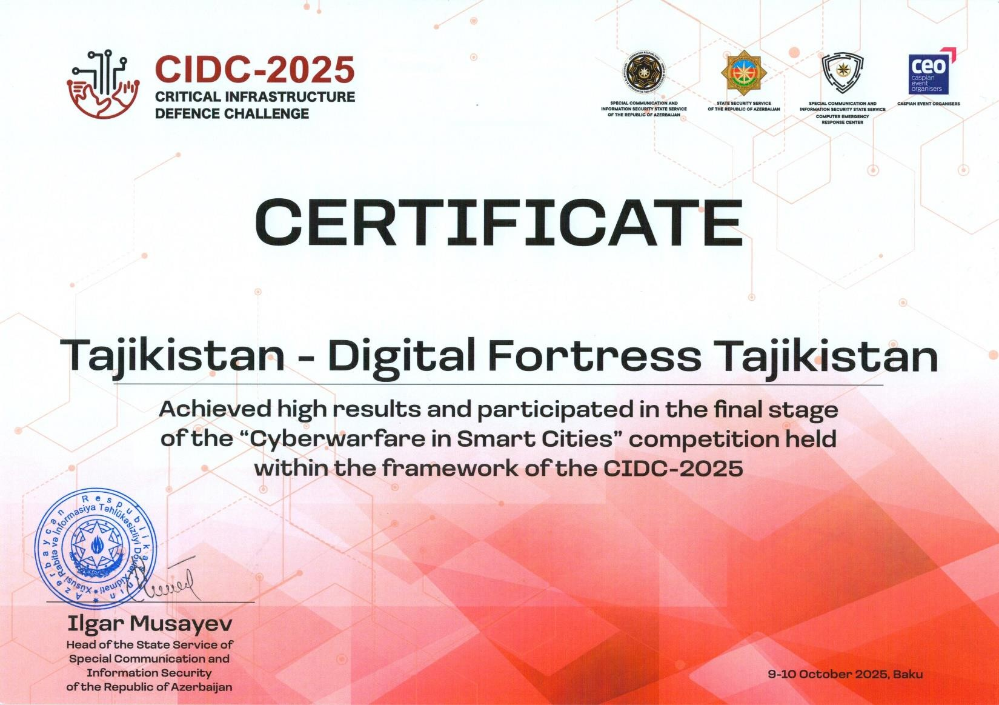

Smart Visitor
Система управления посетителями: групповой QR, раздельный вход и выход, роли сотрудников и охраны, журнал действий и центр безопасности.
Душанбе, Таджикистан · uptime 10+ лет
Ведущий специалист отдела кибербезопасности, IT-специалист, веб-разработчик и дизайнер. Соединяю инфраструктуру, безопасность и понятный интерфейс.
$
$
cat about.md
Я работаю на стыке кибербезопасности, системного администрирования, разработки и визуального дизайна. С 1 января 2026 года возглавляю отдел кибербезопасности ГУП «Умный город».
Мой подход — сначала понять задачу организации, затем построить надёжное и удобное решение: от инфраструктуры и защиты до сайта, приложения и фирменного интерфейса.
ls -la ./projects
Система управления посетителями: групповой QR, раздельный вход и выход, роли сотрудников и охраны, журнал действий и центр безопасности.
Мониторинг транспорта, маршрутов и геопозиции для городских и корпоративных задач.
Цифровая образовательная платформа и инструменты для современного учебного процесса.
Электронное решение для цифровизации медицинских процессов и сервисов.
Интерактивное представление городских данных и объектов на цифровой карте.
Цифровой сервис для отчётности и систематизации рабочих данных.
Проект публичного беспроводного доступа к интернету в городе Душанбе.
Разработка, поддержка, контент и визуальные материалы для организаций и городских сервисов.
tail -f experience.log
ГУП «Умный город» — защита цифровой инфраструктуры, управление рисками и развитие безопасных корпоративных систем.
ГУП «Умный город» — сопровождение IT-инфраструктуры, администрирование сайта, веб-разработка и графический дизайн.
Военный лицей Министерства обороны Республики Таджикистан.
Кинотеатр 5D Sinamo.
unzip certificates.zip

🔓 главное достижение — разблокировано
Critical Infrastructure Defence Challenge — финальный этап конкурса «Кибербезопасность в умных городах», Баку.
Открыт к профессиональному сотрудничеству в области кибербезопасности, IT-инфраструктуры, разработки и дизайна.